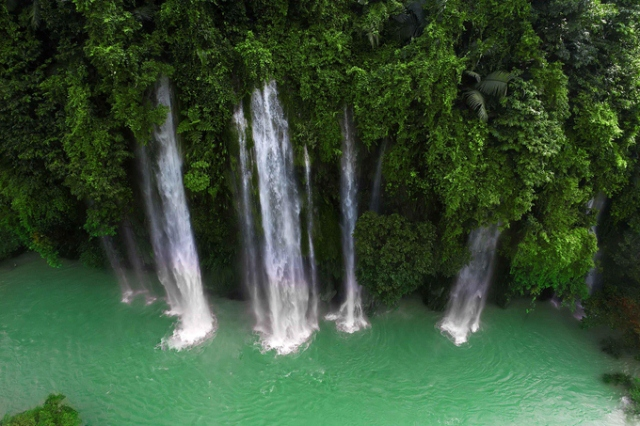
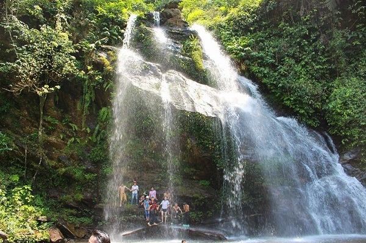
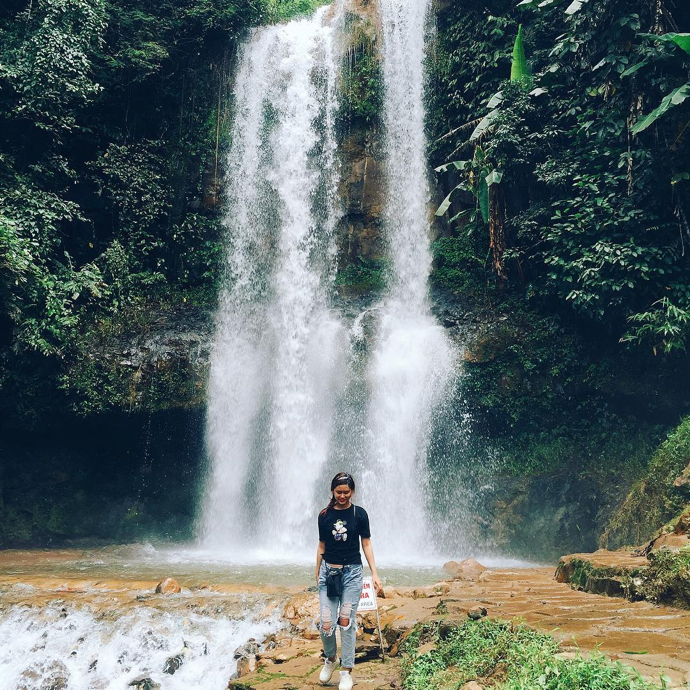
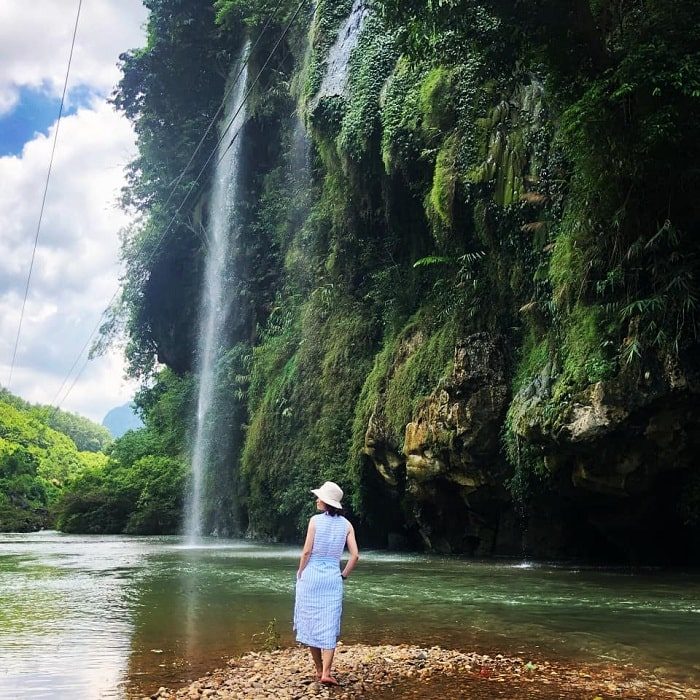

Thác Mưa Rơi là một trong những điểm du lịch mà bạn nhất định phải ghé thăm khi tới Thái Nguyên. Nơi này quang cảnh nên thơ, hoang sơ, hữu tình, rất thích hợp cho chuyến nghỉ dưỡng ngày cuối tuần.
Với địa hình chủ yếu là đồi núi, sông, suối, Thái Nguyên sở hữu rất nhiều những thắng cảnh thiên nhiên tuyệt đẹp, độc đáo. Nổi bật trong số đó là thác Mưa, hay còn có tên gọi khác là thác Nặm Rứt. Con thác này nằm thuộc địa phận xã Thần Sa, huyện Võ Nhai, cách trung tâm thành phố Thái Nguyên chừng 30km.
Sở dĩ có tên gọi là thác Mưa này đó chính là vào những ngày trời nắng ráo, chỉ có duy nhất một con thác hoạt động, đổ những dòng nước nhỏ từ vách đá cao suối dòng sông Thần Sa, tạo nên một khung cảnh vô cùng rực rỡ và độc đáo. Còn khi đến mùa hè, cơn mưa xuất hiện, dòng thác lớn chảy từ độ cao trên 50m bắn tung tóe xuống suối, va vào kẽ đá như vòi hoa sen rắc xuống những hạt mưa li ti.
Dưới sự phản chiếu của tia nắng mặt trời, dòng thác được khúc xạ thành vô số những dải sắc cầu vồng rực rỡ, chiếu rọi xuống dòng sông Thần Sa. Tiếng nước chảy đạp xuống vách đá tạo lên bản hòa ca của núi rừng rất thú vị. Cùng với bầu không khí trong lành, mát rượi, tất cả hòa quyện lại, làm cho cảnh vật tại đây thơ mộng, huyền ảo chắc khác gì bạn đang ở Sapa hay Đà Lạt.
Ngay ở đầu sông Thần Sa có xuất hiện một bãi cát vàng mịn xen kẽ là những viên sỏi li ti, du khách có thể dừng chân ở đây tắm nắng và tận hưởng không khí trong lành.
Dọc bên bờ sông còn có các tảng đá khổng lồ tựa như những bộ bàn ghế để khách vãn cảnh có thể ngồi nghỉ hoặc câu cá. Cách thác Mưa chưa đầy 700m là bản Nặm Rứt, đây là nơi cư trú của người dân tộc Mông. Đến đây, du khách sẽ được thưởng thức những món ăn đặc sản tại bản như rượu ngô, mèn mén, rau cải mèo, ngô luộc, thịt lợn cắp nách, gà rừng nướng,...
Vẻ đẹp của thác Mưa Rơi tựa như một nàng công chúa có thật ẩn mình trong cánh rừng xanh mướt rồi lại hiện ra đôi ba ngày. Nếu bạn muốn thưởng thức cảnh đẹp ở nơi đây thì thời điểm thích hợp nhất cho chuyến khám phá này sẽ là vào mùa hè. Lúc này, không khí ở đây thoáng đãng, bạn có thể tha hồ đắm mình trong làn nước trong mát tại con sông dưới chân thác.
Còn nếu đi vào mùa mưa, tuy đường trơn và khó đi nhưng bù lại bạn sẽ có cơ hội chiêm ngưỡng khoảnh khắc con thác hùng vĩ nhất. Dòng nước từ đầu nguồn sẽ đổ ào ào xuống sông, khiến con thác không còn nhẹ nhàng nữa mà trở lên thật hùng vĩ.
Xe máy: Nếu muốn đi phượt thác Mưa Rơi thì xe máy là phương tiện bạn nên chọn. Chọn xe máy di chuyển bạn sẽ được chủ động về mặt thời gian hơn, có thể dừng lại bất cứ đâu mà bạn thấy đẹp để ngắm cảnh và lưu giữ khoảnh khắc tuyệt vời đó! Đây là điều mà chỉ đi xe máy mới có thể trải nghiệm được.
Cung đường di chuyển cụ thể như sau: Xuất phát từ Hà Nội, du khách di chuyển theo hướng sân bay Nội Bài, rồi rẽ phải đi cao tốc Bắc Ninh. Tiếp đó chạy tiếp 8km là tới địa phận của thành phố Thái Nguyên.
Xe khách: Hằng ngày tại bến xe Mỹ Đình, Giáp Bát, Lương Yên đều có rất nhiều hãng xe chạy tuyến Hà Nội - Thái Nguyên cho bạn tha hồ lựa chọn. Tùy theo chất lượng của xe mà giá sẽ dao động từ 70-150k/chiều.